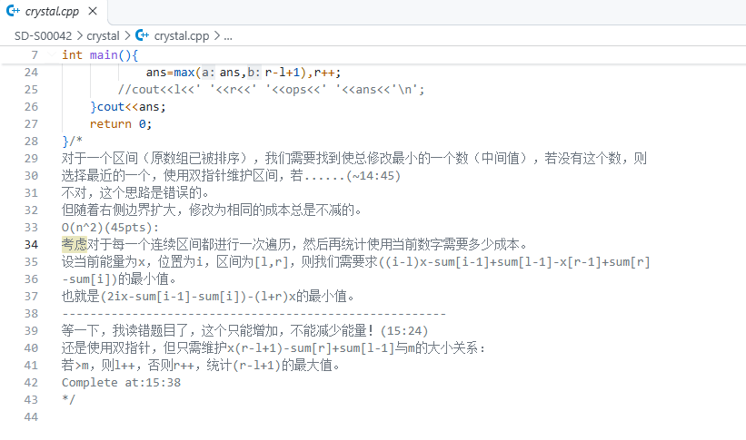
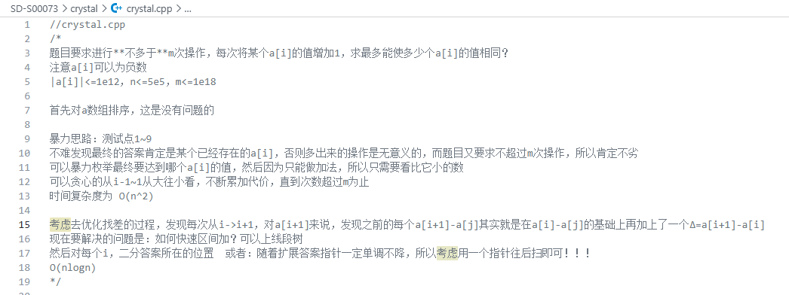
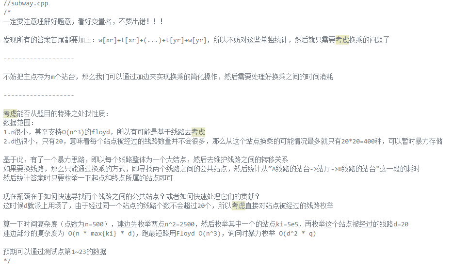
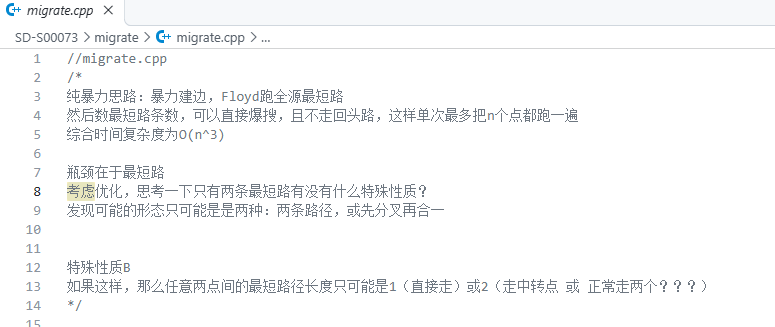
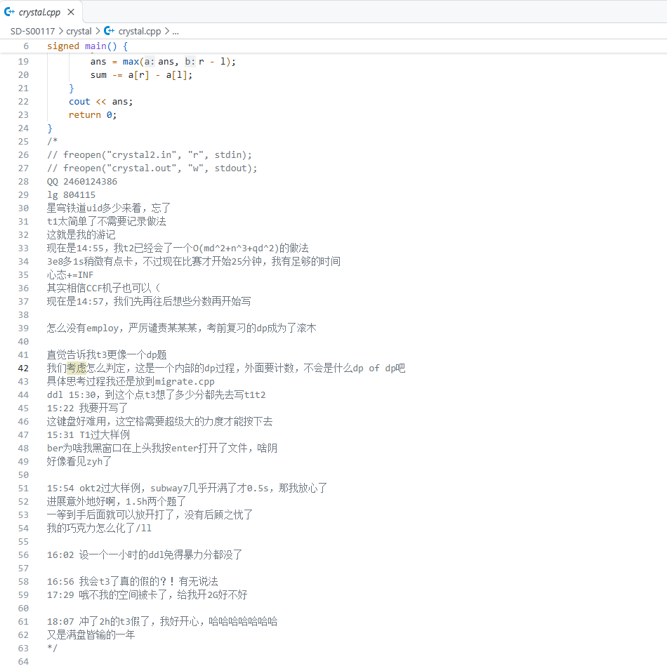
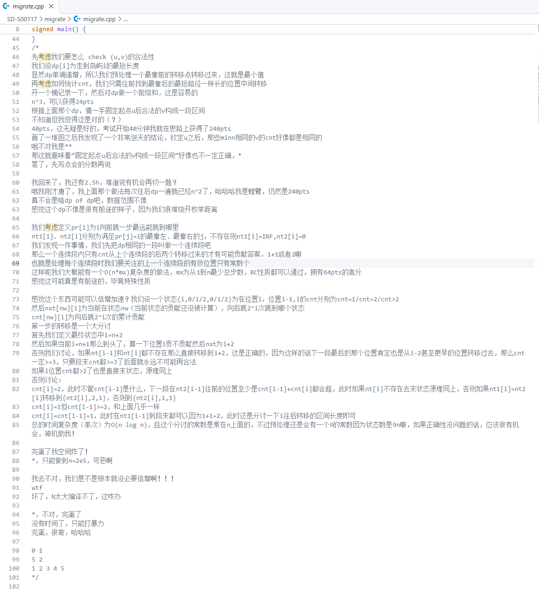
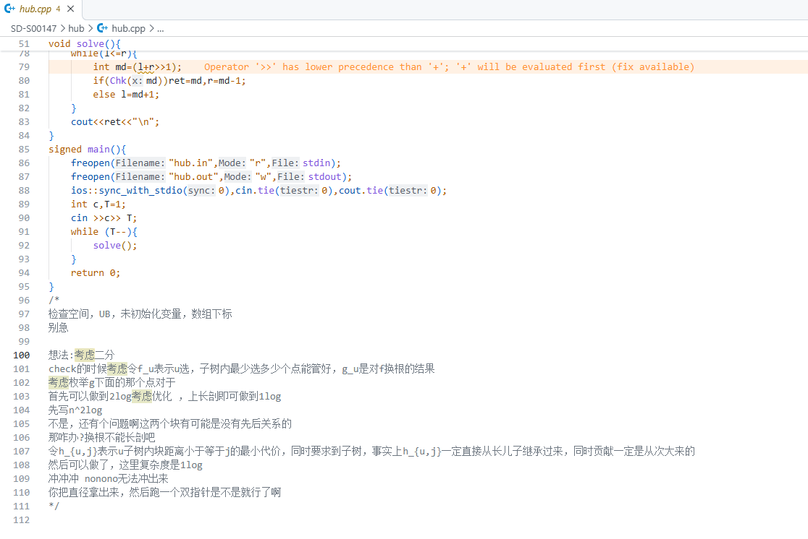
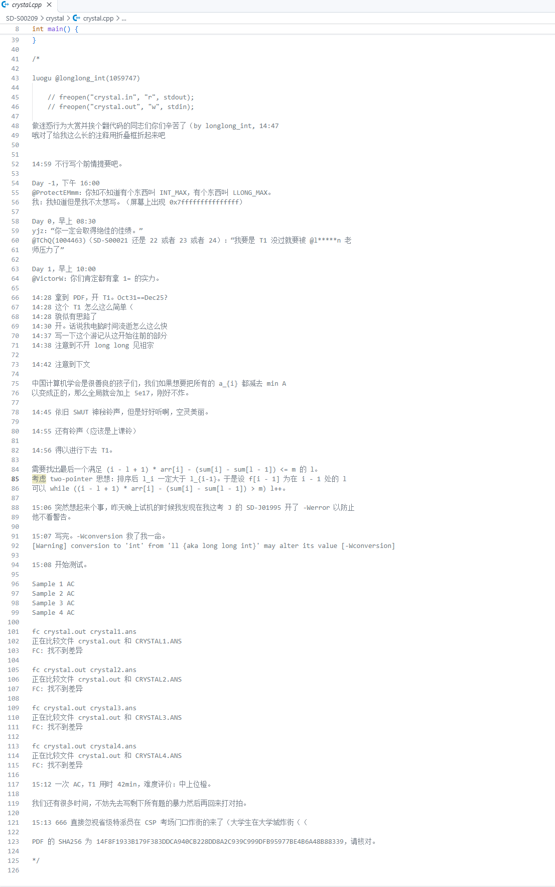
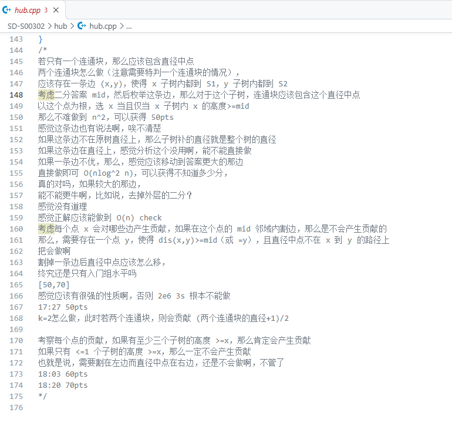

SD CSP-S 2026 迷惑行为大赏
结论先说：
CCF在 49 文件中有 16112 个结果，其中 SD-S00187/hub/hub.cpp 贡献了 6053 个，SD-S01701/crystal/crystal.cpp 贡献了 10000 个fuck在 7 文件中有 10 个结果GPT在 1 文件中有 1 个结果//freopen在 110 文件中有 209 个结果crystal[1-4].in在 20 文件中有 28 个结果subway[1-7].in在 21 文件中有 27 个结果migrate[1-6].in在 27 文件中有 33 个结果crysatl在 1 文件中有 1 个结果crytal在 1 文件中有 2 个结果subwy在 1 文件中有 2 个结果migreat在 1 文件中有 1 个结果p***hub（*是原始字符） 在 1 文件中有 1 个结果recall在 9 文件中有 104 个结果追忆在 11 文件中有 13 个结果原神在 4 文件中有 4 个结果日照在 2 文件中有 2 个结果md^2在 11 文件中有 12 个结果- 没有找到
.cpp.cpp文件
<think>
提示：这一段相对无聊。
SD-S00042
- crystal.cpp

SD-S00073
- crystal.cpp

- subway.cpp

咦，这不是正解吗。
- migrate.cpp

等会，为什么可以是两条路径来着？
SD-S00117
- crystal.cpp

再次提醒，你的复杂度算的是错的，这会被 CCF 检查。
- migrate.cpp

不过好像你猜的第一个结论就错了……
SD-S00142
- subway.cpp
SD-S00147
- hub.cpp

很遗憾，根据本地测试结果，这份代码只获得了 分。
SD-S00209
- crystal.cpp

-Wconversion 是个好东西，可惜我的同学并没有注意到 m 的范围，于是挂到了 。
SD-S00302
- hub.cpp

OldDriverTree nb。
本博客所有文章除特别声明外，均采用 CC BY-NC-SA 4.0 许可协议。转载请注明来源 SnowFlavour's Blog！
评论